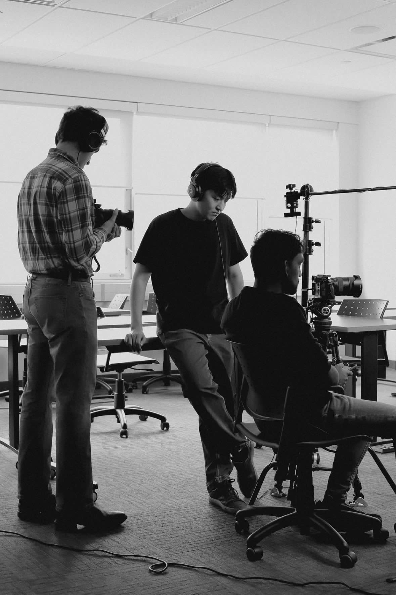
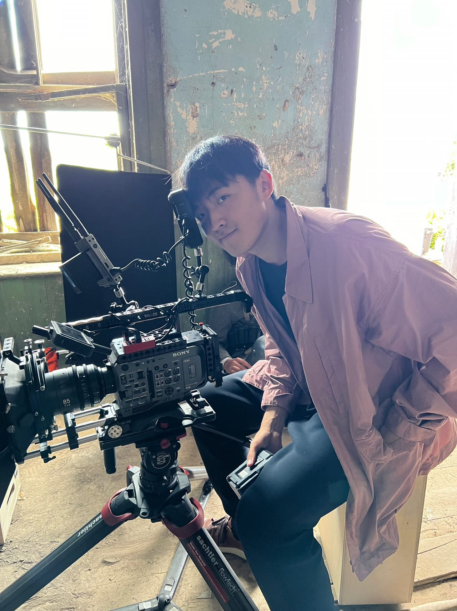
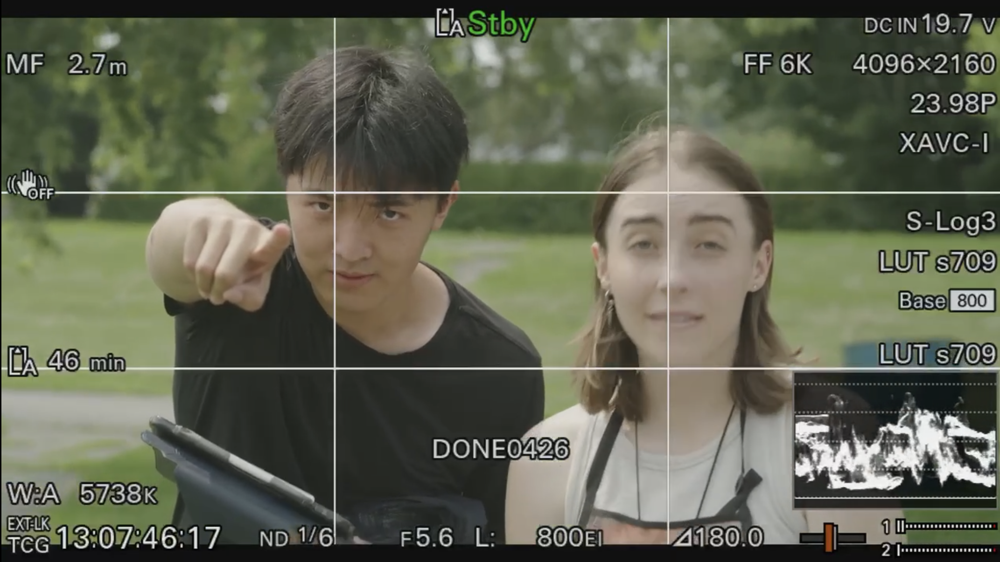
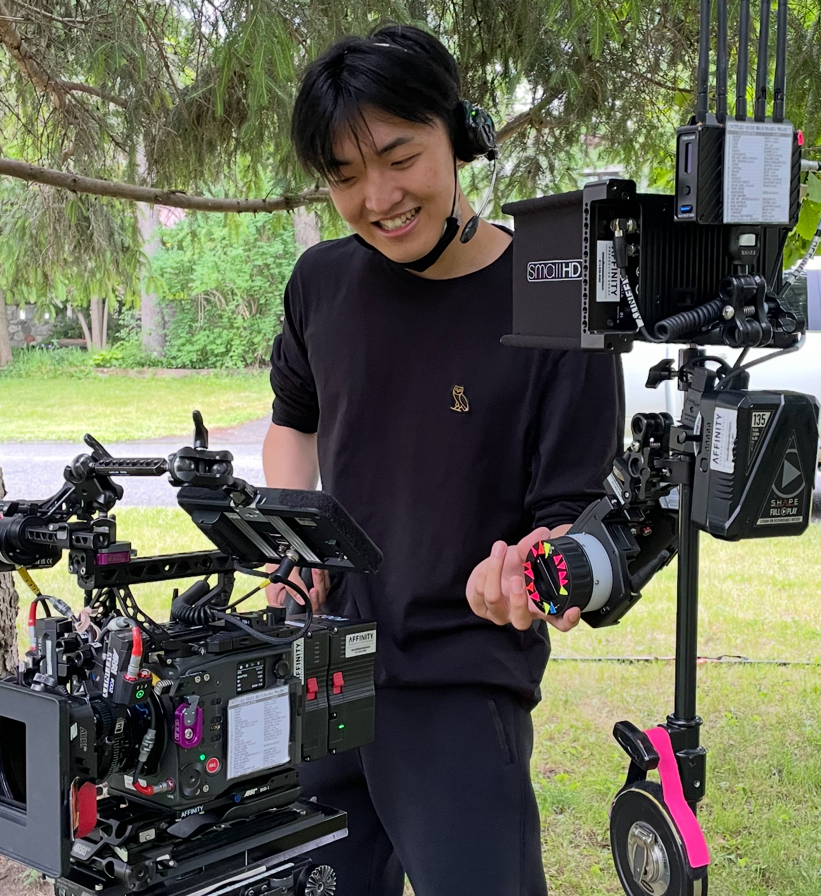
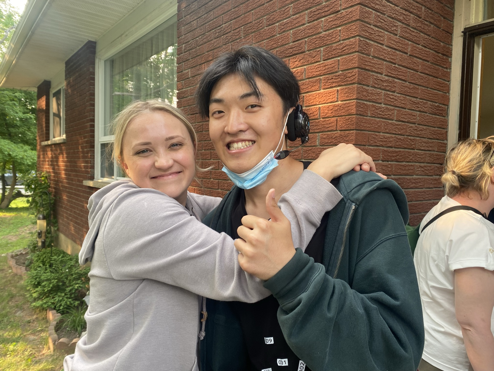

I come from storytelling, but I design for understanding.
My background began in film, where I learned how framing, pacing, and structure guide an audience through a story. As a director, editor, and camera trainee, I became interested in how people make sense of what they see — what they notice, what they miss, and how a sequence of moments becomes meaningful.
That question eventually led me to UX design.
Today, I design digital experiences that help people navigate complex systems, workflows, and decisions. My work often sits between service design, interactive prototyping, visual communication, and storytelling — from designing follow-up tools for social prescribing programs, to exploring trust in art commission platforms, to building interactive documentaries about audience choice and directorial control.
It started with a camera. Directing, editing, training behind the lens — I spent years deciding where an audience looks: what they notice, what they miss, and how a sequence of moments becomes meaningful.
Then the question outgrew the frame.
Now the set is a system — care programs, commission platforms, interactive documentaries about who really holds the camera. Different crew, same direction: guide people through complexity, one clear scene at a time.